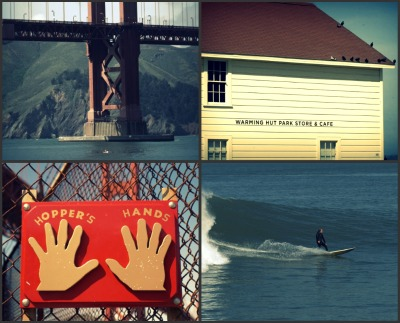

Instructions:
- Select one of the topics below.
- Highlight some text in the article that looks interesting to you.
- Click the Bucket extension (
 ) to collect the text.
) to collect the text.
San Francisco Things To Do - Awesome "Off-the-Beaten-Path" Moments
Shh! Can you keep a secret?
...because you won't find this list of San Francisco things to do in most travel guides for San Francisco!
1. Visit the Wave Organ.
It's an elaborate acoustic sculpture and quirky SF landmark, and if you go you'll be rewarded with great views of the city skyline, SF bay, Alcatraz, and the Golden Gate Bridge.
You'll also likely have the place to yourself! Go at high tide for the best opportunity to hear the weird and warbled, amplified sea tunes! Check the tides.
Here's how to find it:
It's located at 1 Yacht Road in between Crissy Field and the Marina harbor just off of Mason Street.
2. Explore the Mission.
The Mission is one of the most happening neighborhoods in San Francisco, but it's not a part of town that tourists visit often.
Begin your exploration by browsing the off-beat boutiques along Valencia at 16th Street. Head south towards 18th Street, and when you get there, hang a right.
If you are hungry, grab a snack from one of the delightful spots on 18th Street between Guerrero and Dolores. There you will find the city's top voted bakery (Tartine), ice-cream shop (Bi-Rite Creamery), and gourmet market (also Bi-Rite), plus the highly popular Delfina Pizzeria.
If it's sunny, spend an hour or two in Dolores Park. It's where the young, hip urbanites of the Mission go to soak up some rays of sunshine. You'll see spontaneous dance parties with djs, hula-hoopers, sun-bathers, jugglers, picnickers, and happy dogs playing. There is also a spectacular view of the city skyline at the south end.
For dinner, consider a Mexican burrito from one of the Mission district's many taquerias. When the sun goes down, go for a pub crawl in one of the most happening nightlife areas of San Francisco.
3. Climb the mosaic-tiled Moraga Steps to the top of Grand View Park (or as locals call it, Turtle Hill).
You will be rewarded with sweeping views of San Francisco. This place is a true local gem that not many tourists know about!

The steps begin at 16th Avenue and Moraga Street, in the Inner Sunset neighborhood of San Francisco, on the west side of the city.
4. Catch a movie at the independent Castro Theater.
Built in 1922, it is considered a historical San Francisco landmark, and is inarguably the most beautiful theater in town.
Try to catch a "sing-a-long" performance if there is one scheduled, such as Grease or The Sound of Music. People dress up as their favorite characters, and fun party-favors are passed out at the beginning of the show to enhance the participatory experience!
For the events schedule at the Castro Movie Theater, click here.
5. Go for a walk along Lands End, and find the labyrinth next to Mile Rock Beach.
There are plenty of San Francisco locals who haven't walked the beautiful bluffs of the Lands End trail! You can find the beginning of the trail at the parking lot near Sutro Baths.
6. Glide down the Seward Street Slides.
These cement slides are tucked away in a charming little community garden in a corner of the Castro district. Grab a piece of cardboard at the bottom of the slide before heading to the top.
When you are finished you can explore the shops and restaurants around 18th Street and Castro, or make your way to the top of Twin Peaks to check out incredible views of the city!
7. Go for a soak at Kabuki Springs and Spa.
A Japanese style bath house, this is a wonderful place to relax your body and mind. They have alternating women's and men's days, except for Tuesdays when both are welcome to come together. There is a sauna, a steam room, a warm pool, a cold plunge, as well as a full range of spa services.
Located near Fillmore Street and Japantown, there are lots of places nearby to grab a bite to eat before or after your visit.
8. Hike trails by Rodeo Beach in the Marin Headlands.
Ok, so it's not technically San Francisco, but it's just across the Golden Gate Bridge, which is a trip you should take if you are visiting this city anyway!
9. Touch Hopper's Hands, and see the Golden Gate Bridge from an alternate vantage point at Fort Point.
While there, grab a snack from the nearby Warming Hut, and watch surfers catch big waves at Fort Point Break.

In case you are wondering...
Ken Hopper is a Golden Gate Bridge iron-worker who had this little plaque erected when he noticed that runners at Crissy Field always touched their hands to the chain-link fence before turning around and running back.
Aside from bravely working at mind-boggling heights to maintain the integrity of the bridge, he also participates in the challenging task of suicide prevention, by coaxing back jumpers from the Golden Gate Bridge.
He is, along with the other iron-workers of the bridge, a local hero.
10. Join in on Critical Mass!
Critical Mass is a very characteristically San Francisco thing to do, and represents an important aspect of the personality of this city.
It's a bicycle movement that now happens in over 300 cities, but it got its start here in San Francisco in 1992.
Around 6:00 p.m. on the last Friday of every month, you can join hundreds of local bicycle enthusiasts as they ride through town, and cause a bit of mayhem to the rush-hour traffic.
Source: San Francisco Travel Secrets
One perfect day: 24 hours in New York City
Twenty-four hours in New York is nowhere near enough, but if that's all the time you've got, we've got a locally designed itinerary designed to help you make the most of every New York minute.
Morning
8am - Start your day on the Upper West Side with a pilgrimage to the granddaddy of New York Jewish delicatessens: Zabar's (Broadway & 80th St). Grab a bagel with cream cheese and lox, a cup of coffee, and walk two blocks west to Riverside Park for a breakfast picnic overlooking the Hudson River.
8:30am - Stroll down Broadway to 72nd St, then head east to Central Park West; on the northwest corner is the Dakota Building, the 19th-century apartment block where John Lennon lived (and died). Just steps inside Central Park is his teardrop-shaped memorial park Strawberry Fields, with its famous 'Imagine' pavement mosaic. Keep heading east through the park to the stately red-brick Bethesda Terrace, where the beautiful 'Angel of the Waters' statue sits high above one of New York's most famous fountains.
9:30am - Wander up and eastward through the park (passing the small model-sailboating crew along the Conservatory Water and the gaggle of kids climbing atop the nearby Alice in Wonderland sculpture), then exit onto Fifth Ave around 79th St. This puts you at the entrance to the grand Metropolitan Museum of Art, home to one of the world's greatest art collections. Spend a couple of hours checking out some of the highlights – the Egyptian Temple of Dendur, the ancient Greek and Roman statuary and medieval armor from around the world (including Henry VIII's!).
11:30am - From the subway at 86th and Lexington catch a train south to Grand Central Terminal. No one will blame you for staring like a tourist at the glorious constellations painted on the ceiling of the marbled main hall. Head downstairs to the excellent European-style food hall, feast on seafood at the Grand Central Oyster Bar or escape the crowds at the elegant Campbell Apartment (near the Vanderbilt Ave exit).

Afternoon
12:30pm - Walk west along 42nd St. At Fifth Avenue detour around the marble lions standing guard outside the New York Public Library and then head west through Bryant Park till you get to Broadway; hang a right and walk up through the neon bustle of Times Square.
1:30pm - Hop in a cab or grab a Citi Bike (www.citibikenyc.com) down to W 34th St and Eleventh Ave for the start of The High Line, New York's most singular park: a linear greenway built on a disused train bridge, with fantastic river views and street vendors selling ice creams and coffee and the like.
3pm - After you leave the High Line at Gansevoort St, wander through the colonial cobbled streets of the West Village: poke your head into some boutiques, grab a fortifying cupcake from the Magnolia Bakery (Bleecker & 11th St), or even stop for a pint at the White Horse Tavern (Hudson & 11th St). Keep angling southeast to get to leafy Washington Square Park, where you can catch your breath, while indulging in the discreet art of people-watching.
5pm - Continue south and make your way across Houston St to the fashion-conscious streets of SoHo. Here you can browse high-end boutiques, get your cafe fix, peruse books and records at Housing Works Bookstore (126 Crosby St) or even pick up a scientific specimen at Evolution (120 Spring St).
Evening
7pm - Walk, cab or Citi Bike your way over to the Lower East Side for dinner and drinks. The options here are staggering. You can opt for tapas and wine at candlelit Ten Bells (247 Broome St), inventive American fare and cocktails at charming Freemans (191 Chrystie St) or hearty sandwiches at the hipster-loving Meatball Shop (84 Stanton St).
8:30pm - Afterwards, grab a post-dinner drink in the neighborhood. The Lower East Side, and the East Village just north, are packed with great nightspots. You can go grungy (Welcome to the Johnsons), fancy (Beauty & Essex, which is hidden behind a pawn shop) or tap into the vintage cocktail craze (Death & Co).
10pm - With the night well under way, make your way over to the West Village for live jazz. Small's (smallsjazzclub.com), the Village Vanguard (villagevanguard.com) and the Blue Note (bluenote.net) are all great spots to hear those brassy beats. If jazz isn't your speed, you can check out who's playing at Piano's in the Lower East Side, Poisson Rouge in Greenwich Village or the Brooklyn Bowl in Williamsburg.
Late Night
12:30am - Still going? Slam an energy drink and join the party people at bars and clubs around town. You can carouse in the open-air at the rooftop of 230 Fifth (230-fifth.com), get your groove on in Cielo or go bowling till the wee hours at The Gutter (open till 4am).
Source: Lonely Planet
26 Cheap Things to Do, Eat and See in New Orleans
Big cities can be a drain on the wallet with pricey options for entertainment, food, and transportation, but New Orleans, Louisiana, is particularly friendly for those traveling on a budget. Sure you can drop a wad of cash in The Big Easy, but it's not necessary. Here are 26 cheap -- and free! -- things to do, eat, and see in New Orleans that won't bankrupt your vacation.
1. Listen to the eclectic and quirky street musicians strumming on makeshift drums and stringed instruments. Total cost: Free but leave a tip if you're inclined.
2. Order fresh crawfish for a taste of the local cuisine. During the spring, there are often free crawfish boils, but if you're bound and determined to dine, check out Deanie's Seafood to order up a dish of your own. Total cost: Under $10.00.
3. Wander the Crescent City Farmers Market on Saturday morning. If you're lucky, you'll encounter cooking demonstrations and have the opportunity to learn a bit about New Orleans' cuisine. Total cost: Free.
4. Take a walking tour of Algiers Point using a guide that can be picked up at the national park office. Total cost: Free.
5. Indulge in fresh beignets dipped in powdered sugar and a warm beverage to start your morning at Café du Monde. Total cost: Under $5.00, depending on your beverage choice.
6. Get your art on at the Besthoff Sculpture Garden, which features more than 60 sculptures from artists all over the world. Total cost: Free. There is also a free audio tour which is accessible through visitors' cell phones.
7. Take advantage of the city's awesome photo opportunities. New Orleans has several Catholic churches including St. Louis Cathedral, St. Augustine, and Our Lady of Guadalupe, all of which are picture-worthy. Total cost: Free.
8. Give your legs a rest and ride a streetcar instead. Three different lines originate in the downtown area but then crawl out to other parts of the city. Total cost: One-way fares are $1.25.
9. Go for a float on the Canal Street ferry, which offers great views of the New Orleans skyline and transports people from the French Quarter to Algiers and back several times a day. Total cost: Free.
10. Walk in the footsteps of literary greats with a walking tour. A number of famed authors found inspiration in New Orleans including Tennessee Williams, William Faulkner, Truman Capote, Thornton Wilder, Walker Percy, and Anne Rice. Total cost: Free, if you look up a walking tour online before pounding the pavement.
11. Immerse yourself in the sights and sounds that fringe New Orleans when you ride along the city's levee on a bike. Total cost: Rentals start at about $6.00 per hour.
12. Wander through the Garden District and admire the historic architecture. There are self-guided walking tours available, but an informal stroll is also worthwhile. Total cost: Free.
13. Learn about the history of Mardi Gras and what goes into the annual celebration of krewes, parades, and balls every year with a visit to an ongoing exhibit at The Presbytere. Total cost: $6.00.
14. Relax in a local park. New Orleans' city parks have open areas shaded by robust trees, offering the perfect place to unwind after a busy day in the French Quarter. Audubon Park and Woldenberg Park are two favorites. Total cost: Free.
15. Cool off with one of New Orleans' famed snowballs. Found around the town, these tasty cool treats are essentially crushed ice and flavored syrup. Total cost: As low as $1.50.
16. Admire the chilling but famous above-ground tombs in the city's cemeteries. You can take a guided walking tour, but wandering around on your own is equally rewarding. St. Louis Cemetery No. #1 on Basin Street is the final resting place of Voodoo Queen Marie Laveau. Total cost: Free.
17. Party down at one of New Orleans' festivals. Travel in spring and summer for an array of festival choices including the French Quarter Festival, NOLA Navy Week, and Vieux to Do, which combines three events. Don't forget Mardi Gras in February! Total cost: Free.
18. Request a song by the dueling pianos at Pat O'Brien's. While you're there, order the Hurricane, the bar's famous cocktail. Total cost: Your beverage of choice (the Hurricane is $8.00) and a tip for the pianists.
19. Tour the Old Ursuline Convent, the oldest building in the Mississippi River Valley, which has finely crafted woodwork, noteworthy artwork, and gardens. Total cost: $5.00.
20. Appreciate the work of local artists throughout the city. Stop by galleries on Julia and Royal Streets, browse the Mid-City and Bywater art markets, and peruse the goods sold by vendors in Jackson Square. Total cost: Free.
21. Sharpen your knowledge about New Orleans and Louisiana with a stop at the Royal Street Galleries (533 Royal Street), which has a handful of exhibits that are budget friendly. Total cost: Choose from three different tours, each $5.00.
22. Admire the architecture and curious personalities of the New Orleans with a casual stroll through the French Quarter. Total cost: Free.
23. Browse through the city's collection of voodoo potions at the New Orleans Pharmacy Museum, the first licensed apothecary in the country and home to an extensive collection of antiquated medical equipment and cures. Total cost: $5.00.
24. Rock out at Wednesday at the Square, an annual spring concert series put on by the Young Leadership Council. Total cost: Free. Food and drink sales benefit the YLC.
25. Be awed by the Louisiana Superdome, home to many major conventions and sporting events, including Super Bowl XLVII, which will be held there in 2013. Total cost: Free.
26. Leave your legacy at the Old Absinthe House, a building constructed in 1807 with a rich history steeped in the famous green concoction after which it is named. People have been leaving their calling cards on the wall for years, and you're welcome to add yours. Total cost: Free.
Source: Huffington Post
Success! The text you collected was: